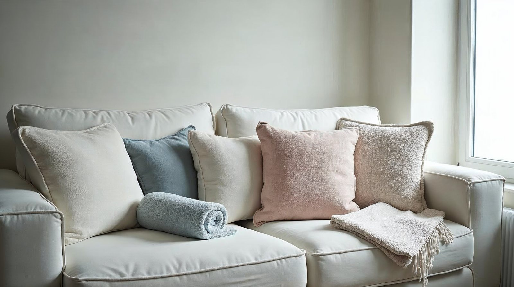
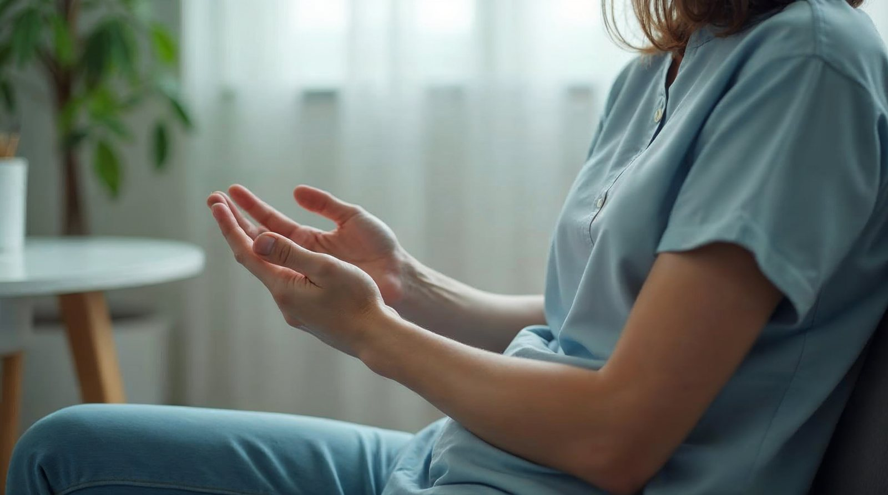
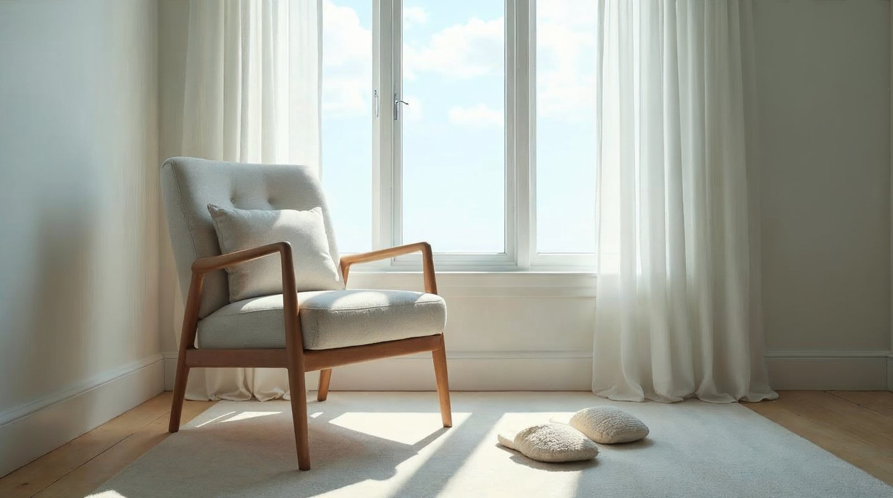
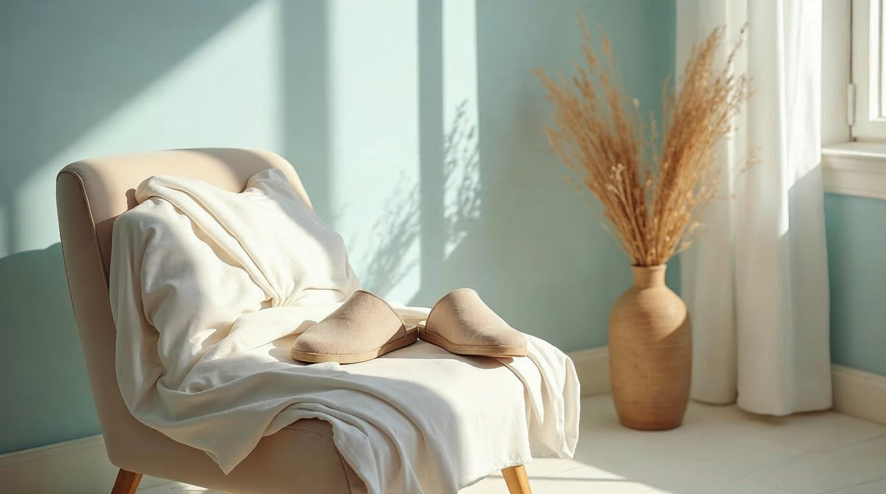
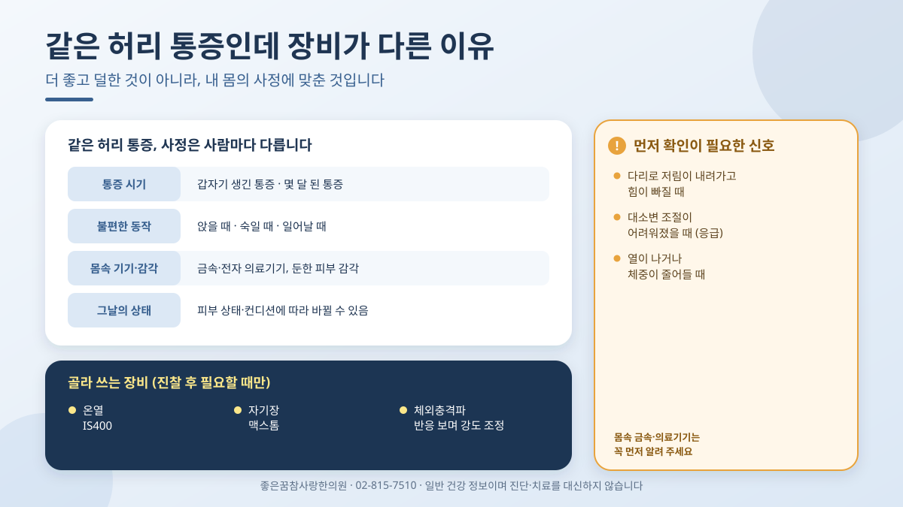

이종호 한의사 감수좋은꿈참사랑한의원 대표원장 (한의사 면허번호 19769)발행 2026-11-23 · 수정 2026-11-25
이 글의 차례
치료실 침대에 엎드려 있으면 옆자리의 소리가 들립니다. 옆 분 허리에는 따뜻한 장비가 올라간 것 같은데, 내 허리에는 침만 놓였습니다. 나도 허리가 아픈데 왜 다를까, 혹시 덜 아프다고 보신 걸까 하는 생각이 스칩니다.
같은 허리 통증이라도 아파진 시기와 불편한 동작, 피부 감각, 몸속 금속이나 의료기기, 그날의 몸 상태가 사람마다 달라서 진찰한 뒤 지금 그 몸에 필요한 방법만 골라 쓰기 때문입니다. 옆 침대와 다른 장비를 받는다고 더 좋거나 덜한 치료를 받는 것이 아닙니다.
진료실에서 이런 말씀을 자주 듣습니다. 저분이 받는 기계를 저도 해 주시면 안 되느냐고요. 장비를 여러 가지 쓰면 더 빨리 풀리지 않겠느냐고 조심스럽게 물으시는 분도 계십니다. 아픈 허리로 출근하고, 아이를 안고, 밤마다 몇 번씩 돌아눕다 오셨으니 할 수 있는 건 다 해 보고 싶으실 겁니다.
그 마음을 알기에 저는 장비 이름보다 그분 허리의 사정을 먼저 듣겠다고 말씀드립니다. 같은 허리 통증이어도 누군가는 하루 종일 앉아서 일해야 하고, 누군가는 밤마다 잠을 설치며, 누군가는 아픈 몸으로 가족을 돌봐야 합니다.
통증이라는 이름은 같아도 그 통증이 생기고 이어지는 삶의 모습은 사람마다 다릅니다. 몸은 따로따로 움직이지 않아서, 잠을 못 자면 통증을 더 크게 느끼고 긴장이 풀리지 않으면 소화도 무거워집니다.

왜 같은 허리라도 쓰는 장비가 다를까요
먼저 아파진 시기가 다릅니다. 어제 짐을 들다 삐끗한 허리와 몇 달째 뻐근한 허리는 접근이 같을 수 없습니다. 막 다쳐서 열감이 있고 붓는 느낌이 있을 때는 데우기보다 식히는 편이 편안한 경우가 있고, 오래 굳은 근육은 따뜻하게 했을 때 움직이기 편해지는 경우가 많습니다.
갑자기 허리를 삐끗한 날에는 배 쪽은 따뜻하게, 허리 쪽은 차갑게 두시라고 안내하기도 합니다.
불편한 동작도 다릅니다. 앉아 있을 때 아픈지, 허리를 숙일 때 아픈지, 의자에서 일어설 때나 돌아누울 때 아픈지에 따라 살피는 자리가 달라집니다. 아픈 곳과 원인이 있는 곳이 꼭 같지는 않아서, 허리를 호소하셔도 엉덩이와 골반, 등의 움직임을 함께 보는 일이 많습니다.
MRI나 엑스레이 결과를 들고 오시는 분도 많습니다. 영상에서 디스크가 튀어나와 보여도 통증이 거의 없는 분이 있고, 영상이 깨끗해도 많이 아픈 분이 있습니다. 사진에 보이는 모습과 아픈 정도가 꼭 같지는 않아서, 저는 영상 결과만 보고 장비를 정하지 않습니다. 언제, 어떤 자세에서 아픈지, 다리로 저림이 내려가는지, 힘이 빠지지는 않는지를 함께 봅니다.
몸속에 무엇이 있는지도 장비를 가릅니다. IS400 같은 극초단파 온열 장비는 금속을 뜨겁게 만들 수 있어 금속 고정물이나 인공관절이 있는 부위에는 쓰지 않습니다. 맥스톰 같은 자기장 장비는 심장박동기 같은 전자 의료기기의 작동에 영향을 줄 수 있어 그런 기기가 있으면 쓰지 않습니다.
체외충격파는 임신 중이거나, 치료 부위에 감염이나 종양이 있거나, 혈액 응고에 문제가 있으면 적용하지 않거나 신중히 판단하고, 혈액을 묽게 하는 약을 드시는지도 먼저 여쭙습니다.
피부 감각과 그날의 몸 상태도 봅니다. 당뇨가 오래되었거나 저림이 있는 자리는 뜨거움을 늦게 느껴 온도를 낮추거나 온열을 피합니다. 감기 기운이 있거나 열이 나는 날, 수면제나 진통제를 드신 날, 술을 마신 다음 날, 밤잠을 거의 못 잔 날에는 같은 분이라도 방법이 바뀝니다. 지난주에 받은 장비를 오늘은 쉬자고 말씀드리는 날이 있는 것도 그래서입니다.
복지관 강연에서 어르신들께 이런 말씀을 드린 적이 있습니다. 같은 무릎을 다쳐도 어떤 분께는 많이 걸으시라고 하고, 어떤 분께는 걷지 마시라고 한다고요. 사람마다 다르기 때문입니다.
무릎이 시리다는 같은 말씀에도 저는 그 자리에서 답을 드리지 않고 먼저 맥을 짚습니다. 어디의 힘이 부족한지, 어디가 막혀 있는지, 잠과 소화는 어떤지를 함께 보아야 방향이 잡히고, 허리와 장비도 다르지 않습니다.
장비는 무엇을 하려고 쓰나요
좋은꿈참사랑한의원에 있는 장비를 하나씩 말씀드리겠습니다. IS400 극초단파 치료기는 치료 부위를 따뜻하게 하는 온열 장비이고, 맥스톰은 자기장을 이용하는 물리요법 장비입니다. 둘 다 진찰 뒤 필요하다고 판단될 때 침이나 추나와 이어서 쓰며, 모든 분께 같은 방식으로 쓰지 않습니다.
가장 아픈 곳은 원장이 직접 치료하고, 그 밖의 불편한 곳은 직원이 자기장·온열·패드형 물리치료로 이어서 살핍니다.
체외충격파는 몸 밖에서 기계적 에너지를 조직에 전달하는 치료입니다. 힘줄이나 근막 쪽 통증이 오래갈 때 상태를 보고 검토하며, 원내에는 제우스와 한일티엠 두 종류가 있어 아픈 자리와 상태를 보고 장비와 세기를 고릅니다.
제가 가장 신경 쓰는 것은 쏘는 일 자체보다 어디에, 얼마나 할지를 판단하는 일입니다. 강도가 높다고 반드시 좋은 것이 아니어서 낮은 강도부터 시작해 말씀을 들으며 조절합니다.
초음파는 치료 장비라기보다 근육과 힘줄, 인대를 화면으로 보는 진찰 도구에 가깝습니다. 영상이 깨끗해도 아플 수 있고, 무언가가 보여도 그것이 지금 통증의 전부가 아닐 수 있습니다. 판단은 늘 진찰 전체를 모아서 합니다.
새로운 치료법은 근거가 어느 정도인지, 한계가 무엇인지 따져 보고 신중하게 진료실에 들이려 합니다. 장비로 할 수 있는 것과 할 수 없는 것을 솔직하게 말씀드리는 것도 제 일이라고 생각합니다.

세게 하기 전에 먼저 여쭙습니다
저는 치료가 되도록 편안해야 하고, 받고 나서 기분이 좋아야 한다고 생각합니다. 그래서 치료를 마치면 시원하신지, 괜찮으신지 여쭙고, 불편하다고 하시면 다시 봅니다. 장비의 세기나 온도를 올리기 전에도 먼저 묻습니다. 전에 어지러웠던 적이 있는지, 드시는 약은 무엇인지, 오늘 기운은 어떤지입니다.
받는 동안 힘들면 참지 말고 바로 말씀해 주세요. 뜨겁다, 따끔하다, 저리다, 어지럽다는 한마디가 온도와 세기, 시간을 다시 맞추는 단서가 됩니다. 한의원이 잘 쉬다 가는 곳이었으면 하는 마음에, 누워 계시는 동안 자세나 온도가 불편하면 언제든 말씀해 달라고 먼저 부탁드립니다.
침처럼 기본적인 치료일수록 의사가 직접 보아야 한다고 생각합니다. 침을 놓으러 가는 그 짧은 시간에도 지난번과 무엇이 달라졌는지를 묻습니다. 처음 얼마 동안 자주 얼굴을 보여 주시면 제가 놓치는 것이 줄어듭니다.

이런 분들을 자주 뵙습니다
점심시간에 잠깐 짬을 내 오시는 직장인이 많습니다. 시간이 없으니 오늘 한 번에 다 받고 가고 싶다고 하시지요. 그럴 때는 그날 꼭 필요한 것부터 하고, 나머지는 다음 방문에 이어서 하자고 말씀드립니다. 자기장 장비를 쓰는 날이라면 휴대전화와 사원증 카드, 스마트워치를 따로 두는 시간까지 생각해 조금 여유 있게 오시면 서두르지 않으셔도 됩니다.
무릎이나 고관절 수술을 받으신 어르신이 허리가 뻐근해 오시는 경우도 있습니다. 이럴 때는 금속이 어디에 있는지 먼저 확인하고, 그 부위를 피해서 할지 다른 방법을 쓸지 함께 정합니다.
새 관절을 붙잡고 있는 것은 여전히 내 근육이라, 수술 뒤에도 관절 위아래 근육을 돌보는 일이 남아 있습니다. 수술 시기와 수술한 병원의 설명, 기기 카드가 있으면 챙겨 와 주세요.
임신을 준비 중이시거나 생리가 며칠 늦어진 분도 계십니다. 온열이나 자기장, 체외충격파를 쓰기 전에 그 사실을 먼저 말씀해 주시면, 그날은 장비를 미루고 다른 방법을 먼저 쓰는 쪽으로 정합니다.
아플수록 잘 듣는 것 같다며 더 세게 해 달라고 하시는 분도 계십니다. 그 마음은 이해하지만, 세기는 견딜 수 있는 범위 안에서 그날 상태에 맞게 맞춥니다. 받고 나서 기운이 쭉 빠지거나 그날 밤 더 욱신거렸다면 다음 진료 때 꼭 말씀해 주세요. 그 대답을 듣고 세기와 간격을 다시 정합니다.
옆 사람이 받는 장비를 꼭 받아 보고 싶다고 하시는 분도 계십니다. 진찰해 보고 필요하다고 판단되면 함께 검토합니다. 몸 상태 때문에 쓸 수 없을 때는 왜 쓰지 않는지 그 이유를 말씀드립니다.

치료받는 날, 이렇게 해 주시면 맞추기가 쉽습니다
전날 밤에는 치료받을 부위에 붙인 파스를 떼어 피부를 쉬게 해 주세요. 파스를 막 뗀 자리는 열과 자극에 예민할 수 있습니다. 당일 아침에는 그 부위에 연고나 진한 크림을 바르지 않고, 시계와 반지, 목걸이 같은 금속 장신구는 집에 두고 오시면 편합니다. 옷은 위아래가 나뉘어 허리를 드러내기 쉬운 것이 좋습니다.
접수할 때는 드시는 약을 모두 알려 주세요. 혈액을 묽게 하는 약과 수면제, 진통제는 장비를 고를 때 특히 참고가 됩니다. 몸속 금속이나 의료기기, 임신 가능성도 이때 말씀해 주시면 됩니다. 서둘러 걸어오셨다면 5~10분쯤 앉아 숨을 고르신 뒤 진찰을 받으세요. 걸어오신 직후에는 맥도 달라지기 때문입니다.
치료받은 날 저녁에는 불편했던 동작 한두 가지를 다시 해 보세요. 양말을 신을 때, 의자에서 일어설 때 어땠는지 한 줄만 적어 두시면 됩니다. 다음 날 아침 첫 동작의 느낌도 한 줄 보태 주세요. 그날은 같은 부위에 전기장판이나 핫팩을 오래 겹쳐 대지 말고, 사우나도 쉬는 편이 좋습니다.
오시기 전에 스스로 물어보세요. 몸속에 금속이나 의료기기가 있는가? 혈액을 묽게 하는 약을 먹고 있는가? 치료받을 자리에 저리거나 감각이 둔한 곳이 있는가? 임신 가능성이 있는가? 예전에 받았던 장비 치료 가운데 유난히 불편했던 것이 있는가? 하나라도 그렇다면 시작 전에 먼저 말씀해 주세요.
얼마나 지켜보고, 언제 진료를 받을까요
치료 뒤 가벼운 뻐근함이 하루 이틀 이어지는 정도라면 느낌과 시간을 메모해 두었다가 다음 진료 때 알려 주세요. 같은 느낌이 사흘 넘게 이어지거나 점점 심해지면 다음 예약을 기다리지 말고 전화(02-815-7510)로 상의해 주세요. 몇 주 동안 이어 왔는데도 불편한 동작에 변화가 없다면 방법을 다시 검토하고, 필요하면 다른 검사를 권해 드립니다.
다음과 같은 경우에는 장비 치료보다 확인이 먼저입니다.
- 다리로 저림이 내려가면서 힘이 빠지는 경우
- 대소변 조절이 갑자기 어려워지거나 엉덩이 주변 감각이 둔해진 경우
- 통증과 함께 열이 나거나 이유 없이 체중이 줄어드는 경우
- 넘어지거나 부딪힌 뒤 통증이 심해 몸을 움직이기 어려운 경우
- 치료 부위에 물집이 생기거나 피부색이 하얗게 또는 거뭇하게 변한 경우
이런 신호가 있으면 한의원보다 가까운 병원이나 응급실을 먼저 찾으세요. 드시는 약은 처방한 의사와 상의 없이 줄이거나 끊지 않습니다.
좋은꿈참사랑한의원에 처음 오시면
처음 오시면 잠시 숨을 고르신 뒤 양손의 맥부터 짚습니다. 맥을 짚으면서 허리가 언제부터, 어떤 일 뒤에 아프기 시작했는지 여쭙고, 가장 불편한 동작, 다친 적이나 수술한 적, 드시는 약, 예전에 받았던 치료 가운데 편했던 것과 불편했던 것도 듣습니다.
하루 중 오래 하는 자세와 잠, 소화까지 여쭈면 의아해하시는 분도 있지만, 그 연결을 함께 보아야 지금 필요한 치료가 보입니다.
그다음 혀와 배를 살피고, 아픈 자리를 눌러 보고 움직여 봅니다. 필요하다고 판단되면 초음파로 근육과 힘줄을 함께 보고, 오늘 받을 치료와 그 이유를 먼저 설명드립니다.
침·약침·추나를 바탕으로 IS400 온열, 맥스톰 자기장, 체외충격파(제우스·한일티엠) 가운데 쓸 것이 있는지, 쓴다면 왜 그것인지도 이때 말씀드립니다. 비용이나 보험 적용은 방문 전 전화로 확인해 주세요.
다시 오시면 지난번 치료를 받은 날 저녁이 어땠는지, 같은 동작이 어떻게 달라졌는지부터 이어서 여쭙고 방법을 다시 정합니다. 담당 원장이 바뀌는 날에도 지난 기록을 함께 보고 이어서 진료합니다. 제가 좋겠다고 생각해서 드린 치료가 그분의 하루에서는 어땠는지, 그 대답은 다음에 만나야 들을 수 있습니다.
마치며
옆 침대와 다른 장비를 받으면 마음이 쓰이는 게 당연합니다. 그만큼 빨리 덜 아프고 싶으셨을 테고, 아픈 허리로 버텨 온 시간이 길었을 테니까요. 장비가 많고 적음보다 먼저 볼 것은 오늘 그 몸에 맞느냐입니다.
궁금한 장비가 있으면 편하게 물어보세요. 저도 여러분이 무엇을 궁금해하시는지는 여쭈어야 압니다. 쓰는 이유도, 쓰지 않는 이유도 말씀드리겠습니다. 다음에 오시면 지난번 치료를 받은 날 저녁, 허리를 숙였다가 펴는 동작이 어떠셨는지부터 여쭙겠습니다.
함께 읽으면 좋은 글
- IS400 극초단파 치료기로 온열 치료를 받을 때 무엇을 알아 두면 좋을까요?
- 맥스톰 자기장 치료기를 쓰기 전에 무엇을 알려 주면 좋을까요?
- 체외충격파 장비가 여러 종류면 어떻게 골라서 쓰나요?

왜 같은 허리라도 쓰는 장비가 다를까요
- 먼저 아파진 시기가 다릅니다.
- 어제 짐을 들다 삐끗한 허리와 몇 달째 뻐근한 허리는 접근이 같을 수 없습니다.
장비는 무엇을 하려고 쓰나요
- 좋은꿈참사랑한의원에 있는 장비를 하나씩 말씀드리겠습니다.
- IS400 극초단파 치료기는 치료 부위를 따뜻하게 하는 온열 장비이고, 맥스톰은 자…
세게 하기 전에 먼저 여쭙습니다
- 저는 치료가 되도록 편안해야 하고, 받고 나서 기분이 좋아야 한다고 생각합니다.
- 그래서 치료를 마치면 시원하신지, 괜찮으신지 여쭙고, 불편하다고 하시면 다시 봅니다.
이런 분들을 자주 뵙습니다
- 점심시간에 잠깐 짬을 내 오시는 직장인이 많습니다.
- 시간이 없으니 오늘 한 번에 다 받고 가고 싶다고 하시지요.
자주 묻는 질문
장비 치료를 많이 받을수록 좋은가요?
많이보다 맞게 쓰는 것이 중요해 필요한 것만 골라 씁니다.
장비 없이 침만 맞아도 되나요?
상태에 따라 가능하며 진찰 후 함께 정합니다.
다른 사람이 받는 장비를 저도 받고 싶은데요?
진찰 후 필요하다고 판단되면 함께 검토합니다. 몸 상태에 따라 쓸 수 없는 경우도 있어 그 이유를 설명해 드립니다.
장비 치료 순서는 어떻게 정하나요?
진찰 결과와 그날 상태에 따라 정하며, 같은 분이라도 날마다 조금씩 달라질 수 있습니다.
몸에 금속이 있으면 장비 치료를 받을 수 없나요?
금속의 위치와 종류에 따라 쓰지 않는 장비가 있어 먼저 여쭙습니다. 그 부위를 피하거나 다른 방법을 쓰기도 하니, 수술 기록이나 기기 카드가 있으면 챙겨 와 주세요.
좋은꿈참사랑한의원은 재진 때 지난번 이야기부터 이어서 여쭙니다. 진료시간과 예약은 오시는 길에서 확인하세요.
어디서 상담받을 수 있나요?
좋은꿈참사랑한의원은 서울 동작구 만양로2길 2 신성빌딩 3층·5층(서울 동작구 상도동, 7호선 상도역 3번 출구 근처)에 있습니다. 한의사 3명(이종호 대표원장, 조영기 수석진료원장, 정원영 진료원장)이 진료합니다. 진료시간은 평일 09:30~20:00(점심 13:00~14:00), 토·일·공휴일 09:30~15:00이며, 방문 전 전화로 확인을 권합니다. 예약은 네이버 예약, 카카오톡 상담, 전화 02-815-7510로 받습니다.
이 글은 일반적인 건강 정보이며 개인의 진단이나 치료를 대신하지 않습니다. 증상이 있거나 복용 중인 약이 있다면 진료를 통해 확인하세요. 치료 효과는 개인마다 다를 수 있습니다.
작성 기준: 일반적으로 알려져 있는 건강 정보를 참고해 정리했습니다(대표원장 감수). 증상 기록은 1~2주 동안 하루 1회, 비슷한 시간에 적어 오시면 지난 상태와 비교하기 쉽습니다.